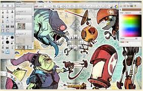

Sketchbook
Sketchbook, is a raster graphics software app intended for expressive drawing and concept sketching also for making animations.
ArtRage
ArtRage is a bitmap graphics editor for digital painting.
Linea Sketch
An elegant, simple digital sketchbook for iOS. Optimized for use with Apple Pencil.
Flow
Ideal app for sketching and note taking.
>
Software
Which one is best?
There are pros and cons to each of these applications, and so the best way to find whichever one works the best for you it to experiment with any of them. Things to consider when looking for a good drawing software are responsiveness, controls, how intuitively the interface makes sense to you, extra rescourses made for that software, brush options, resolution, stylus type, and pressure sensitivity.